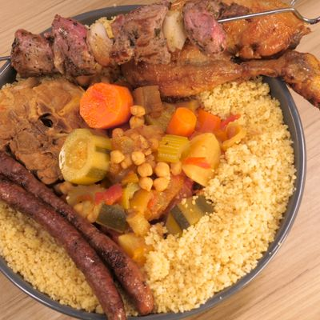

Recette du Couscous 8pers
Préparation : 45 min/Cuisson : 1 h

Ingrédients
- 6 courgettes moyennes
- 2 aubergines
- 600 g de carotte
- 1 botte de céleri branche
- 8 navets
- 4 oignons
- 1 boîte de pois chiches
- 1 boîte de tomates pelées
- 1/2 boîte de concentré de tomates
- 2 cuillères à café de paprika
- 2 cuillères à soupe de Ras el Hanout
- 2 safran
- Sel
- Fleur de sel
- Huile d'olive
- 6 morceaux de collier d'agneau
- 1 gigot d'agneau
- 1 poulet
- 8 merguez
- 1 kg de semoule moyenne
Ustensiles
- 1 couteau
- 1 four
- 1 pinceau
- 1 économe
- une fourchette
- 1 planche à découper
- 1 cuiseur vapeur
- 1 saladier
- 1 barbecue
- 1 dénoyauteur
Instructions
- Désosser le gigot d'agneau, le découper en cubes de 4 cm. Les mettre à mariner dans de l'huile d'olive et des herbes de provences pendant 1 heure.
- Badigeonner le poulet d'huile d'olive et le recouvir de fleur de sel, le faire cuire à la tourne broche dans le four pendant 1h à 1h30.
- Eplucher tous les légumes et les oignons, les détailler en gros cubes.
- Faire revenir les morceaux de collier dans le couscoussier à l'huile d'olive, les retirer et y mettre tous les légumes à revenir sauf les courgettes.
- Couvrir d'eau, saler, y ajouter le concentré de tomate, les tomates pelées, le safran, le paprika, le Ras el hanout et les morceaux de collier.
- Laisser mijoter le tout durant 1h à 1h30, ajouter les courgettes au bout de 30 minutes de cuisson et les pois chiches 20 minutes avant la fin de la cuisson.
- Préparer la semoule en la faisant cuire à la vapeur dans le haut du couscoussier et en la roulant plusieurs fois, y ajouter du beurre à la fin.
- Piquer les morceaux d'agneaux marinés sur des brochettes en alternant avec un ou deux morceaux d'oignons.
- Les faire cuire au grill viande ou au barbecue.
- Faire cuire les merguez au grill viande ou au barbecue.
- Découper le poulet.
- Servir le tout accompagné de harrissa( selon les goûts).